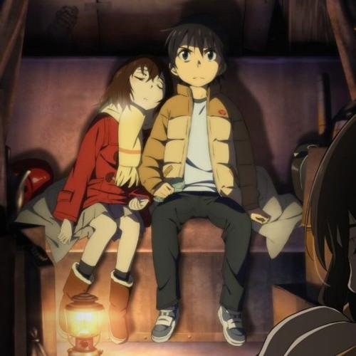

Рекомендации
Здесь будут отображаться аниме подходящие по жанрам что вы просматривали недавно
Город, в котором меня нет
Жанры: мистика, детектив и психология.
Год выпуска: 2016.
Оригинальное название: Boku dake ga Inai Machi
Возрастной рейтинг: 18+